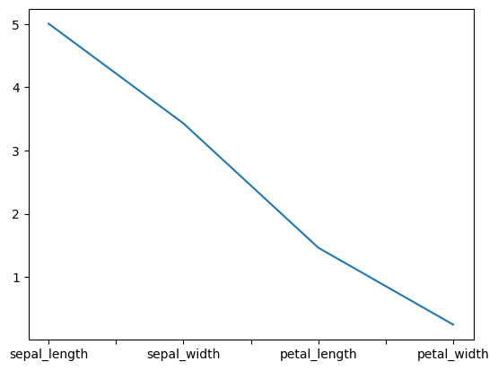
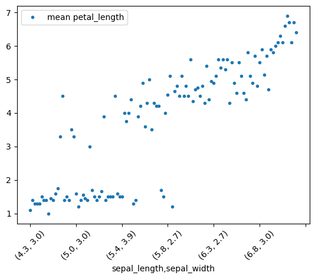
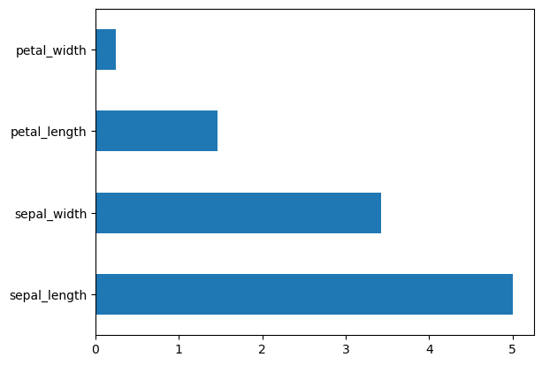

import numpy as np
import pandas as pd
import seaborn as snsMetadata
Course: DS 5100
Module: 06 Pandas
Topic: Method Chainging
Author: R.C. Alvarado
Date: 21 September 2022Method Chaining
iris = sns.load_dataset('iris')iris| sepal_length | sepal_width | petal_length | petal_width | species | |
|---|---|---|---|---|---|
| 0 | 5.1 | 3.5 | 1.4 | 0.2 | setosa |
| 1 | 4.9 | 3.0 | 1.4 | 0.2 | setosa |
| 2 | 4.7 | 3.2 | 1.3 | 0.2 | setosa |
| 3 | 4.6 | 3.1 | 1.5 | 0.2 | setosa |
| 4 | 5.0 | 3.6 | 1.4 | 0.2 | setosa |
| ... | ... | ... | ... | ... | ... |
| 145 | 6.7 | 3.0 | 5.2 | 2.3 | virginica |
| 146 | 6.3 | 2.5 | 5.0 | 1.9 | virginica |
| 147 | 6.5 | 3.0 | 5.2 | 2.0 | virginica |
| 148 | 6.2 | 3.4 | 5.4 | 2.3 | virginica |
| 149 | 5.9 | 3.0 | 5.1 | 1.8 | virginica |
150 rows × 5 columns
iris.index.name = 'iris_id'iris| sepal_length | sepal_width | petal_length | petal_width | species | |
|---|---|---|---|---|---|
| iris_id | |||||
| 0 | 5.1 | 3.5 | 1.4 | 0.2 | setosa |
| 1 | 4.9 | 3.0 | 1.4 | 0.2 | setosa |
| 2 | 4.7 | 3.2 | 1.3 | 0.2 | setosa |
| 3 | 4.6 | 3.1 | 1.5 | 0.2 | setosa |
| 4 | 5.0 | 3.6 | 1.4 | 0.2 | setosa |
| ... | ... | ... | ... | ... | ... |
| 145 | 6.7 | 3.0 | 5.2 | 2.3 | virginica |
| 146 | 6.3 | 2.5 | 5.0 | 1.9 | virginica |
| 147 | 6.5 | 3.0 | 5.2 | 2.0 | virginica |
| 148 | 6.2 | 3.4 | 5.4 | 2.3 | virginica |
| 149 | 5.9 | 3.0 | 5.1 | 1.8 | virginica |
150 rows × 5 columns
iris = iris.reset_index()\
.set_index(['species', 'iris_id'])iris| sepal_length | sepal_width | petal_length | petal_width | ||
|---|---|---|---|---|---|
| species | iris_id | ||||
| setosa | 0 | 5.1 | 3.5 | 1.4 | 0.2 |
| 1 | 4.9 | 3.0 | 1.4 | 0.2 | |
| 2 | 4.7 | 3.2 | 1.3 | 0.2 | |
| 3 | 4.6 | 3.1 | 1.5 | 0.2 | |
| 4 | 5.0 | 3.6 | 1.4 | 0.2 | |
| ... | ... | ... | ... | ... | ... |
| virginica | 145 | 6.7 | 3.0 | 5.2 | 2.3 |
| 146 | 6.3 | 2.5 | 5.0 | 1.9 | |
| 147 | 6.5 | 3.0 | 5.2 | 2.0 | |
| 148 | 6.2 | 3.4 | 5.4 | 2.3 | |
| 149 | 5.9 | 3.0 | 5.1 | 1.8 |
150 rows × 4 columns
iris.groupby('species').agg('mean').T.setosa.plot()<AxesSubplot: >
iris.groupby(['sepal_length','sepal_width']).petal_length.mean()\
.to_frame('mean petal_length')\
.plot(style='.', rot=45);
iris.groupby('species').mean().T.setosa.plot.barh();
iris.groupby('species')\
.agg({'mean', 'min', 'max'})\
.T\
.style.background_gradient(cmap="GnBu", axis=1)| species | setosa | versicolor | virginica | |
|---|---|---|---|---|
| sepal_length | mean | 5.006000 | 5.936000 | 6.588000 |
| max | 5.800000 | 7.000000 | 7.900000 | |
| min | 4.300000 | 4.900000 | 4.900000 | |
| sepal_width | mean | 3.428000 | 2.770000 | 2.974000 |
| max | 4.400000 | 3.400000 | 3.800000 | |
| min | 2.300000 | 2.000000 | 2.200000 | |
| petal_length | mean | 1.462000 | 4.260000 | 5.552000 |
| max | 1.900000 | 5.100000 | 6.900000 | |
| min | 1.000000 | 3.000000 | 4.500000 | |
| petal_width | mean | 0.246000 | 1.326000 | 2.026000 |
| max | 0.600000 | 1.800000 | 2.500000 | |
| min | 0.100000 | 1.000000 | 1.400000 |
iris# iris.TX = iris.T.stack()XX.index.names = ['feature', 'iris_id']XX.groupby('feature')\
.agg({'mean', 'max', 'min'})\
.T\
.style.background_gradient(cmap="GnBu", axis=0)